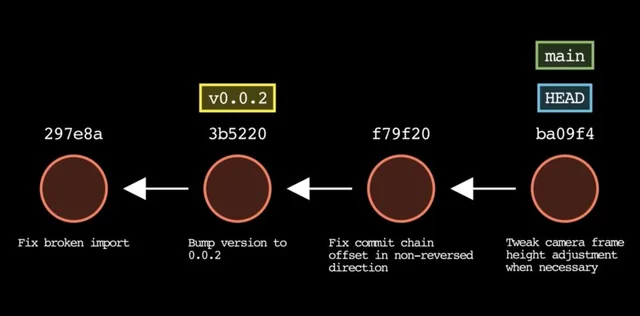
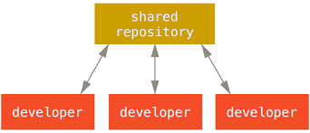

Formation git
Git est un système dec contrôle de version distribué
- Suivre les modofications des fichiers.
- Revenir à des versions précédentes.
- Permettre à plusieurs personnes de travailler sur le même projet
- Conserver l'historique du code
Instalation
- https://git-scm.com/install/windows
- git -v : Vérifier l'instalation
Configuration
- git config --global user.name "alex"
- git config --global user.email "alex@gmail.com"
- git config --list
- git :Aide de git
Initialiser un dépôt git
git init : Création un dossier cacher .git
Zone git
- Zonde de travail
- Zone d 'index
- Zonde de dépôt
Les commandes git
- git status : Affiche létat actuel du dépôt git[Branche acuelle, fichiers modifiers ou indexé, fichier non suivie]
- Zone du travail ==> en rouge fichier non suivie(Untracked files)
- Zone index ==> en vert Modification qui seront validéees (Changes to be committed)
- zone dépôt ==> Arbre de travil propre(Working tree clean)
-
git add
- nom_fichier : Ajouter un fichier dans la zone index
- . : Ajouter plusieurs fichier du répértoire courant dans la zone indexe
- git reset : Permer de passe de la zone index vers zone du travail
- git commit -m"message" : passer de la zone index vers la zone de dépôt

-
git log
- Afficher les commites[SHA-1: identifaint unique de 40 caractéres, l'auteur, date de création, message de la commit, un ensemble de modification, liste(SHA-1) de son ou ses parents]
- --oneline : Afficher les commites en lines
- --oneline -1 :Afficher le dernier commit
- --oneline -2: Afficher les deux derniers commites
- -p nom_fichier : Afficher les modofications sur les fichiers
- Exemple des comites

- git show : Voir un commit en détail
- git diff
- tous les modifications entre zone du travail et la dernier commite (- ou rouge: supprission d'une ligne, + ou vert ajout d'une ligne)
- --cached : Modification entre zone index et la dernier commite
-
Pointeurs:
- Master : pointeur branche principale qui poite sur la dernier commit
- HEAD : Poite par défaut sur master mais on peut la déplacer entre les commites
- Tag : pointeur personnel fix
- Création d'un tag:
- Déplacer au niveau du commit : git checkout SHA-1
- Donner un nom au tag : git tag V01
- Supprimer un tag : git tag --delete 'V01'
- Déplacer le tag HEAD entre les commites:
- git checkout SHA-1 : Voir les comites sans modofocations
- git checkout nom_tag
- git checkout master : revenir a la dernier commite
gihub
- Inscription : https://github.com/
- git clone https://github/mom_site.git ==> au niveau dépôt locale [master, origin/master]
- Gérer les remotes(un pointeau sur le dépôt distant):
- git remote -v
- git remote show origin
- Ajouter un remote : git remote add origin https://... monsite.git
- Pousser les modofications sans les tags vers serveur : git push -u origin master
- git pull origin V1 ou tous les tags git push origin --tagsmark>
- Récuper les modifictions du serveur vers dépôt loale et déplacer master vers origin/master: git pull
Travailler en équipe

git blame nom_fichier : [^la personne qui a creér le fichier , SHA-1 ...] permet de savoir qui a modifié chaque ligne d'un fichier et quand
gitk nom_fichier ==> version graphique
le système de branche
Une branche est une version parallèle de ton code.Elle permis de travailler sur une fonctionalité ou une correction sans modifier la brache principale.
- git branch ==> *master
- git branch css
- git branch ==> master *css
- git checkout css
Merge
- git switch master
- git merge css